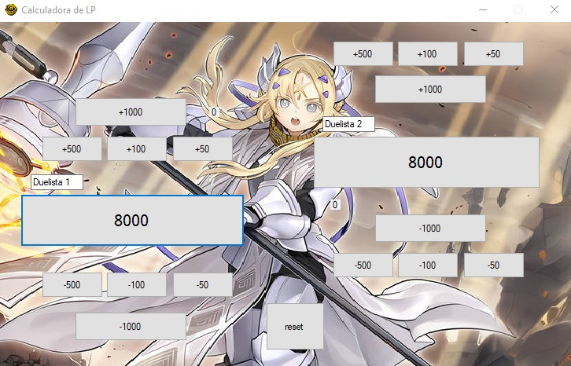
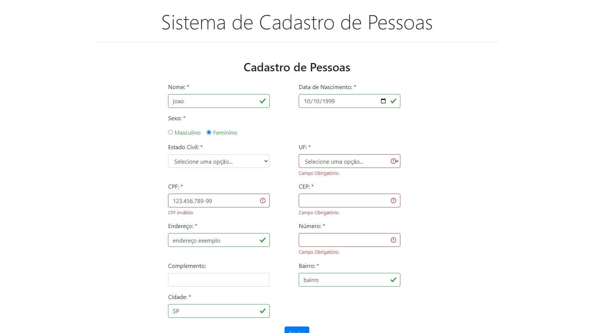
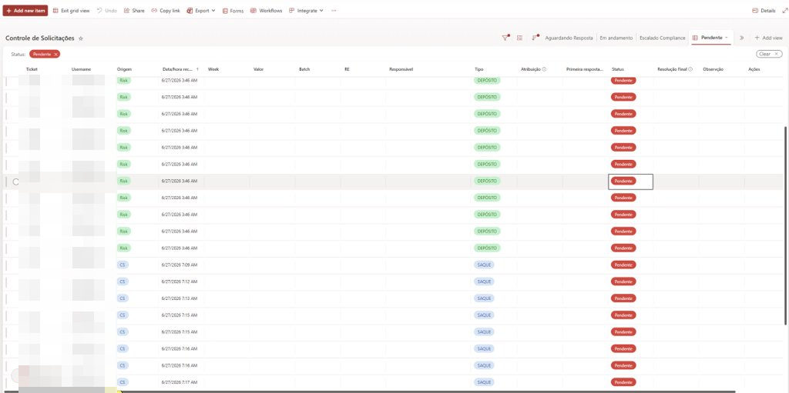
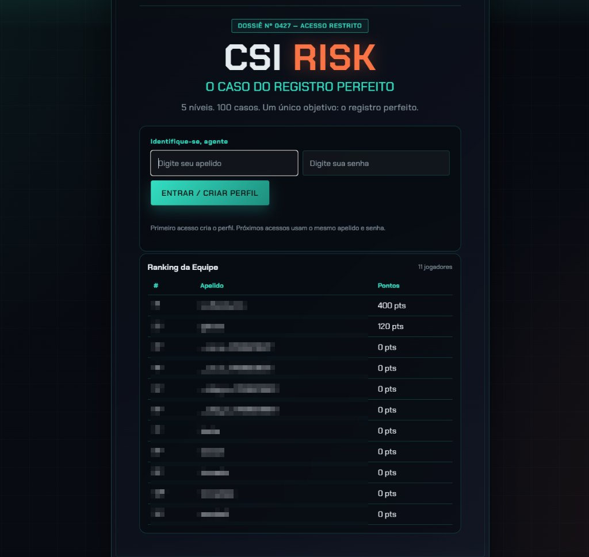

Disponível para oportunidades
Olá, eu sou
João Vitor.
Automação & Risk
Transformo necessidades operacionais em soluções digitais, automações e sistemas integrados, combinando conhecimento de Risk/AML com desenvolvimento prático.
Sobre mim
Construindo software com propósito.
Sou profissional de Risk Management com experiência prática em automação, desenvolvimento de ferramentas internas e melhoria de processos. Conecto conhecimento operacional a HTML, CSS, JavaScript, Python, Power Automate, SharePoint, Microsoft Lists e Excel para transformar rotinas manuais em soluções rastreáveis, organizadas e escaláveis.
Stack principal
13Projetos selecionados
O que tenho construído.

YGOtools
Ferramenta desenvolvida em C# para auxiliar jogadores com recursos relacionados ao universo Yu-Gi-Oh!.

CRUD (em desenvolvimento)
Aplicação web completa com operações CRUD, interface responsiva e integração com SQL Server.
LIAM
Ecossistema interno para criação, distribuição, controle e tratamento de casos de Risk, com integração entre aplicações web, SharePoint, OneDrive e automações.

Request Tracker
Fila operacional para organizar solicitações enviadas por e-mail à equipe de Risk, melhorar o acompanhamento e documentar as ações dos analistas.

CSI Risk
Jogo interativo de investigação com 5 níveis e 100 casos, perfis, ranking da equipe e modo ranqueado multiplayer online para treinar registros de Risk.
Código aberto
Repositórios no GitHub.
CSI-Risk
Jogo interativo de investigação CSI Risk: 5 níveis, 100 casos e modo multiplayer.
Ver repositórioGaicosCrud-V-2.0
Cadastro de pessoas e manipulação de banco de dados com pessoas cadastradas.
Ver repositórioYGOtools
Uma ferramenta intuitiva para gerenciar e otimizar decks de Yu-Gi-Oh!.
Ver repositórioVamos conversar